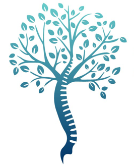

Espace Francilien du Rachis
Dr Jameson · Dr Lamerain · Dr Travert
🚀 Mon Parcours Interactif
Préparation globale
0% complété
1. Planification
2. Veille et Jour J
3. Hospitalisation
4. Convalescence
Bilan d'imagerie complet
Scanner, IRM et Radiographies à jour
Consultation d'Anesthésie
Réalisée obligatoirement au moins 48h avant l'acte
Gestion des Anticoagulants
Protocole d'arrêt ou substitution validé par l'équipe
Bilan Sanguin
Prise de sang effectuée selon l'ordonnance pré-opératoire
Douche antiseptique
Réalisée le soir et le matin même avec le savon prescrit
Jeûne strict
Respect des consignes (zéro nourriture ni boisson)
Dossier administratif
Consentement éclairé et fiches d'information signés
Premier lever et marche
Effectués dès le lendemain matin avec le kinésithérapeute
Éducation motrice
Apprentissage des gestes de sécurité (lever "en bloc")
Surveillance et Drainage
Surveillance constante avant ablation du drain et sortie
Soins de cicatrice
Pansement à domicile par infirmière (tous les 2-3 jours)
Marche progressive
Objectif : restaurer progressivement votre périmètre de marche
Visite de contrôle
Consultation de suivi planifiée pour valider la consolidation
Mes Fiches d'Information par Pathologie
Chirurgie Cervicale
Arthrodèse Antérieure (ACDF)
→
Prothèse Discale Cervicale
→
Canal cervical / Myélopathie
→
Chirurgie Lombaire
Hernie discale lombaire
→
Sténose (Mini-tubulaire)
→
Canal Lombaire (Open)
→
Arthrodèse ALIF
→
Prothèse discale
→
Arthrodèse postérieure
→
Cimentoplastie
→
Endoscopie
Endoscopie Biportale (UBE)
→
Médecine Interventionnelle
Neurolyse (Thermocoagulation)
→
Infiltrations rachidiennes
→
Documents Transversaux
Mon Suivi Interactif (Accès Complet)
→
Guide : Préparer mon intervention
→
Suggérer une amélioration / Feedback
📝